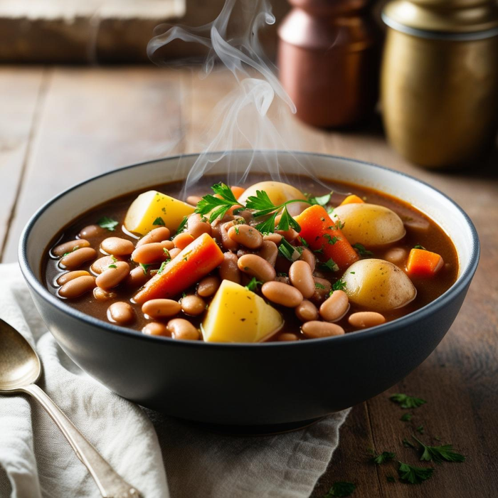

Potaje de habichuelas o fabada
Descripción
El potaje de habichuelas, o fabada, es una excelente fuente de nutrientes. Las habichuelas son ricas en proteínas vegetales, fibra y minerales esenciales como el hierro y el magnesio, que ayudan a fortalecer los huesos y el sistema inmunológico.
El chorizo y el tocino aportan vitaminas del grupo B, especialmente la B12, importante para la salud del sistema nervioso y la producción de energía. Además, este potaje es una excelente fuente de antioxidantes que protegen el cuerpo contra el envejecimiento celular.
Ingredientes
- alubias (en remojo de la noche anterior)
- 1 cabeza de ajo asada
- 1 tomate
- 1 pimiento
- ½ cebolla
- 2 ó 3 patatas partidas por la mitad
- chorizo
- morcilla
- costilla
- 1 cucharadita de pimentón
- 2 hojas de laurel
- clavos (unos 6-8)
- pimientas (unos 8-10 granos)
- sal
- 1 cucharón de aceite
- agua
Pasos
- Se añaden todos los ingredientes con el agua fría en la olla.
- En la olla express una vez que hierva se deja una media hora.
- En la olla convencional se deja cocer una hora y media aprox.
- Una vez pasado el tiempo de cocción, se tritura el tomate, la cebolla, el pimiento y la pulpa de los ajos. Añadimos la mezcla triturada a la olla y mezclamos todo.